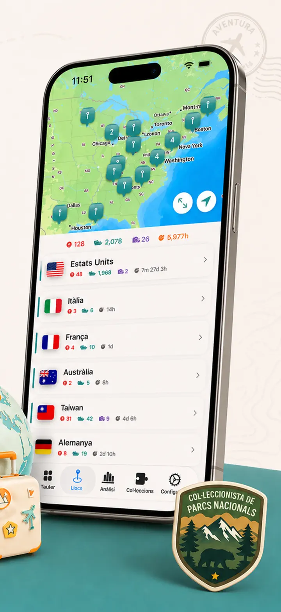
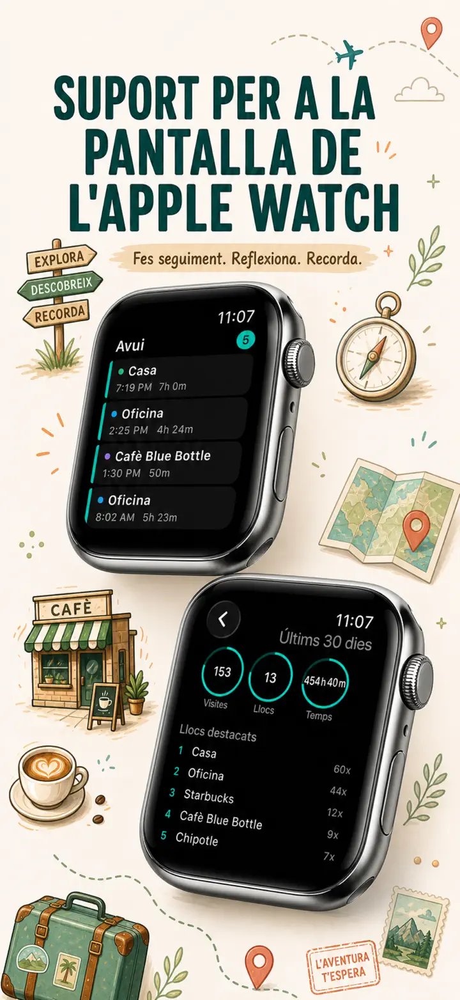
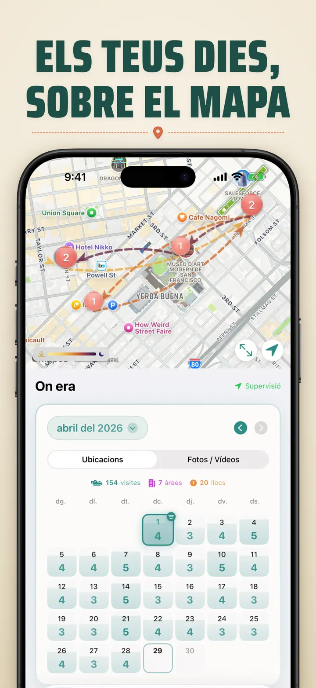
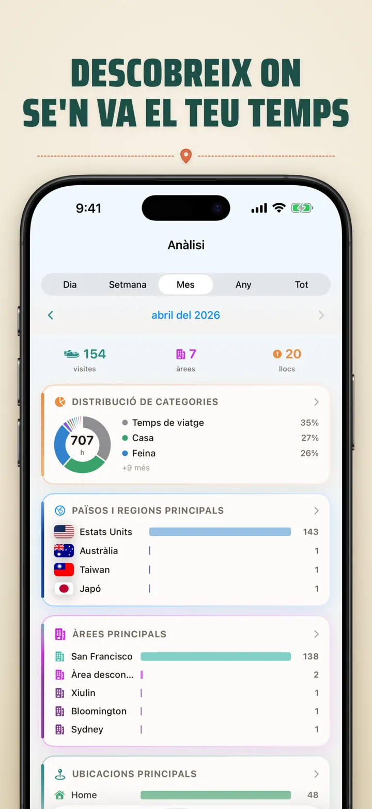
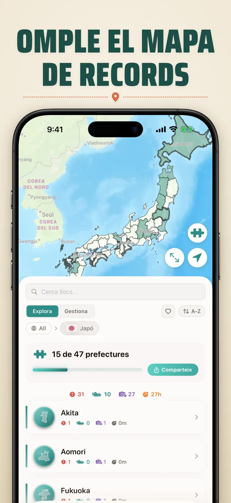
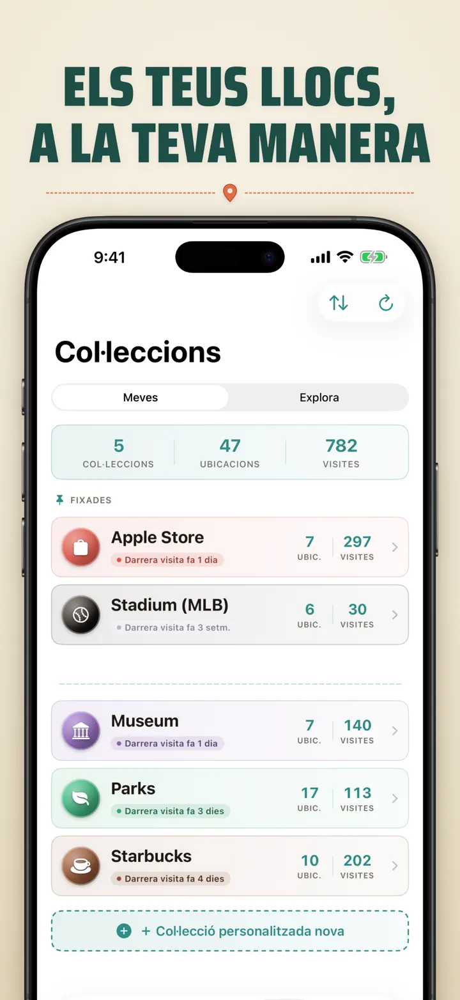
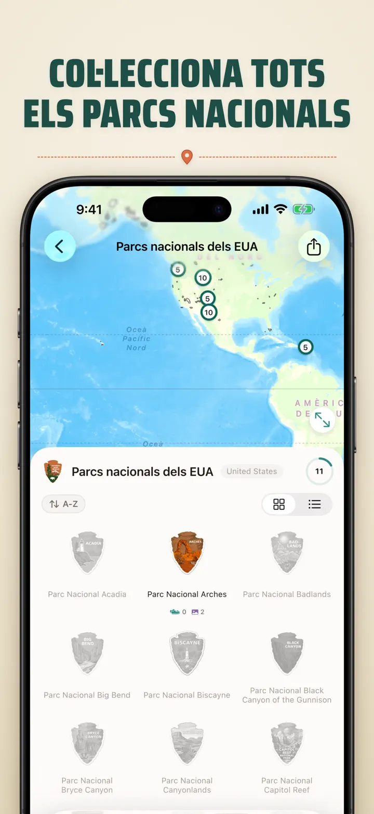
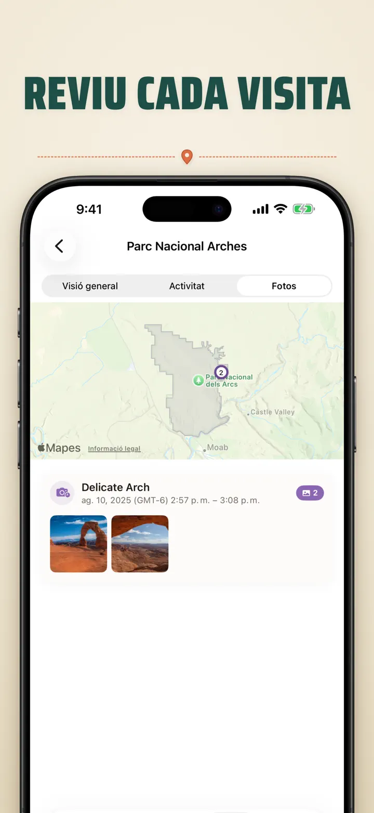

On era
Viatges i llocs automàtics
Nou: els 103 santuaris Ichinomiya del Japó, cadascun amb la seva insígnia tallada. Seguiment automàtic de visites i línia de temps privada, al teu dispositiu.
Descarrega a l’App StoreSobre l’app
Where was I ? — La teva memòria personal d'ubicacions
Vols recordar aquell restaurant tan bo del mes passat? O saber quantes hores passes a la feina o a casa? Where was I ? registra les teves visites i construeix una bonica línia de temps del teu dia a dia.
REGISTRE AUTOMÀTIC
No cal apuntar res. L'app guarda silenciosament quan arribes i marxes dels llocs, creant un historial detallat sense esforç.
VISTA DE CALENDARI INTEL·LIGENT
Veu les teves visites per dia, setmana o mes. El calendari mostra el nombre de visites i llocs únics. Toca qualsevol dia per veure on vas ser.
WIDGETS DE PANTALLA D'INICI I DE BLOQUEIG
Mira les teves visites recents amb el widget mitjà de la pantalla d'inici. Els de la pantalla de bloqueig mostren la teva ubicació actual, un cronòmetre d'estada en directe o les visites d'avui — toca'n qualsevol per obrir l'app.
UBICACIONS ORGANITZADES
Les ubicacions s'agrupen per regió i ciutat. Assigna categories com Casa, Feina, Gimnàs o Cafeteria. Crea les teves amb icones i colors.
ANALÍTIQUES POTENTS
Descobreix els patrons de la teva vida:
- Distribució del temps per categories
- Els llocs que més freqüentes
- Anàlisi del ritme setmanal
- Tendències de freqüència de visites
- Durada d'estades per lloc — dia, setmana, mes o any
COL·LECCIÓ DE PAÏSOS I REGIONS
Converteix els teus viatges en un trencaclosques! Mira quants estats, províncies o regions has visitat a cada país. Comparteix el progrés com una imatge.
PROGRÉS EN PARCS NACIONALS
Surt a explorar! Registra les teves visites als parcs nacionals al costat de les ubicacions del dia a dia.
100 CASTELLS CÈLEBRES DEL JAPÓ
De viatge pel Japó? Una col·lecció integrada fa el seguiment de les teves visites als 100 castells cèlebres del país. La trobaràs a Col·leccions → Explora → Japó.
COL·LECCIONS PERSONALITZADES
Apple Stores, museus, cerveseries, llibreries — el que vulguis. Defineix paraules clau i s'omple sola. Afegeix o treu a mà. Nombre, historial i mapa per a cadascuna.
IMPORTA EL TEU HISTORIAL D'UBICACIONS
Véns d'una altra app? Emporta't tot el teu historial — el format es detecta automàticament, les exportacions grans no són cap problema i veuràs una previsualització abans d'importar res:
- Google Timeline (exportació de Google Maps o Google Takeout)
- Arc Timeline (els fitxers .json mensuals que exportes des d'Arc)
- Moves (còpia de ProtoGeo / Facebook Moves)
GESTIÓ EN BLOC
Gestiona totes les teves ubicacions des d'un sol lloc. Cerca, ordena i filtra. Selecciona'n diverses per categoritzar-les o esborrar-les en bloc.
PRIMER LA PRIVACITAT
Les teves dades d'ubicació es queden al teu dispositiu. Sense comptes ni servidors. Els teus moviments són cosa teva.
PERFECTA PER A:
- Controlar hores i llocs de feina
- Recordar restaurants i botigues visitats
- Analitzar la teva rutina diària
- Diari de viatges i parcs nacionals
- Justificar despeses i quilometratge
- Entendre com distribueixes el teu temps
FUNCIONS:
- Detecció automàtica d'arribada i sortida
- Vista de calendari amb cronologia diària
- Widgets de pantalla d'inici i de bloqueig amb enllaços directes
- Agrupació d'ubicacions per regió i ciutat
- Categories personalitzades amb icones i colors
- Suggeriments d'Apple Maps
- Historial detallat amb durada
- Durada d'estades per lloc (dia/setmana/mes/any)
- Tauler d'analítiques
- Cerca i filtre
- Països i regions amb imatge per compartir
- Seguiment dels parcs nacionals
- 100 castells cèlebres del Japó (integrat)
- Col·leccions personalitzades amb paraules clau, edició manual i estadístiques
- Gestió d'ubicacions en bloc
- Importació des de Google Timeline, Arc Timeline i Moves
- Funcions d'exportació
- No cal cap compte
- Disseny respectuós amb la privacitat
Comença avui la teva memòria d'ubicacions. Descarrega Where was I ? i no oblidis mai més on has estat.
Política de privacitat: https://masawata.net/privacy-policy.html Condicions del servei: https://www.apple.com/legal/internet-services/itunes/dev/stdeula/
Captures de pantalla








On era
Nou: els 103 santuaris Ichinomiya del Japó, cadascun amb la seva insígnia tallada. Seguiment automàtic de visites i línia de temps privada, al teu dispositiu.
Descarrega a l’App Store